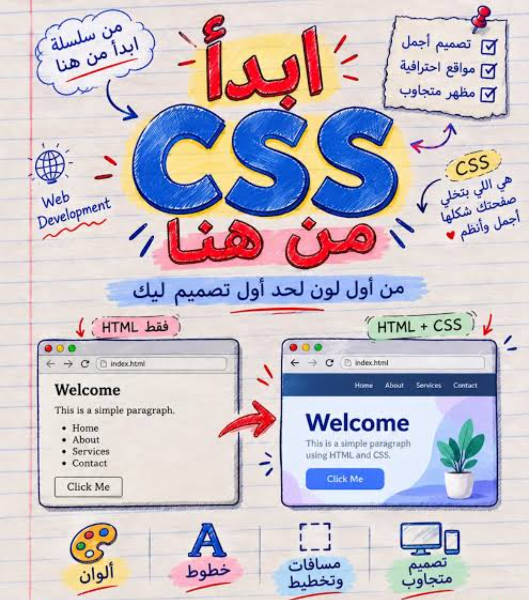

اسم الطالبة: Fatma mohamed zedan
الرقم الجامعي (ID): 2500159
الفرقة الدراسية: الفرقة الثانية
القسم العلمي: نظم المعلومات الإدارية (MIS)
تحت إشراف الدكتورة الفاضلة: Dr. Maha Zaghloul
تعد المنصات الإلكترونية وتطبيقات الإنترنت الركيزة الأساسية لنظم المعلومات الحديثة في العصر الرقمي الحالي. ولا يقتصر بناء هذه المنصات على تنظيم البيانات برمجياً وإدارتها في قواعد البيانات فقط، بل تلعب الواجهات المرئية دوراً حاسماً ومباشراً في نجاح النظام وسهولة التعامل معه دون تعقيد. في هذا التقرير، نناقش لغة أوراق الأنماط المتتالية (CSS) والتي تمثل الأداة الأساسية التي تحول الهياكل الجافة المكتوبة بلغة HTML إلى واجهات مريحة للعين ومبنية بشكل منظم. ومن منظور تخصص نظم المعلومات، فإن التحكم في الألوان، واختيار الخطوط المتناسقة، وتخطيط الصفحات يساعد على كفاءة تصفح المعلومات داخل المنصة.
تعمل لغة CSS عبر استهداف عناصر صفحات الويب وتطبيق خصائص تصميمية وتنظيمية عليها لتسهيل تجربة المستخدم. وتتضمن هذه الخصائص التحكم في الألوان والخلفيات التي تؤثر على هوية المنصة وسهولة قراءة محتواها، بالإضافة إلى إدارة الخطوط والنصوص لضمان وضوح البيانات والتقارير داخل نظم المعلومات بشكل صحيح. كما تعتمد على مفهوم "صندوق العناصر" (Box Model) الذي يحدد الأبعاد والهوامش الداخلية والخارجية والحدود لترتيب العناصر بشكل متناسق.
تكمن أهمية لغة CSS في قدرتها على تحقيق تجاوب الواجهات مع مختلف الشاشات (Responsive Web Design)، حيث تتكيف واجهة النظام تلقائياً لتناسب شاشات الحاسوب والهواتف الذكية باستخدام استعلامات الميديا (Media Queries)، مما يضمن حماية البيانات من التداخل عند تصفح المنصة عبر الموبايل. وبناءً على ذلك، نستنتج أن لغة CSS هي ركيزة أساسية في بناء المنصات الإلكترونية الحديثة وتصميم واجهات المستخدم، ومساعدة أخصائي نظم المعلومات على تقديم حلول رقمية تتسم بالكفاءة والترتيب العملي.

| المحور الأساسي | الأداة المستعملة في CSS | الأثر على نظام المعلومات |
|---|---|---|
| الألوان والخلفيات | color / background-color | جعل النصوص مريحة وقابلة للقراءة. |
| الخطوط والنصوص | font-family / font-size | ضمان وضوح البيانات والتقارير الحساسة. |
| هيكلة الصفحات | Box Model / Margins | ترتيب محتوى المنصة بشكل منظم ومتناسق. |
| التجاوبية المرنة | Media Queries | تكييف الواجهات تلقائياً مع الهواتف الذكية. |
إعداد الطالبة: Fatma mohamed zedan